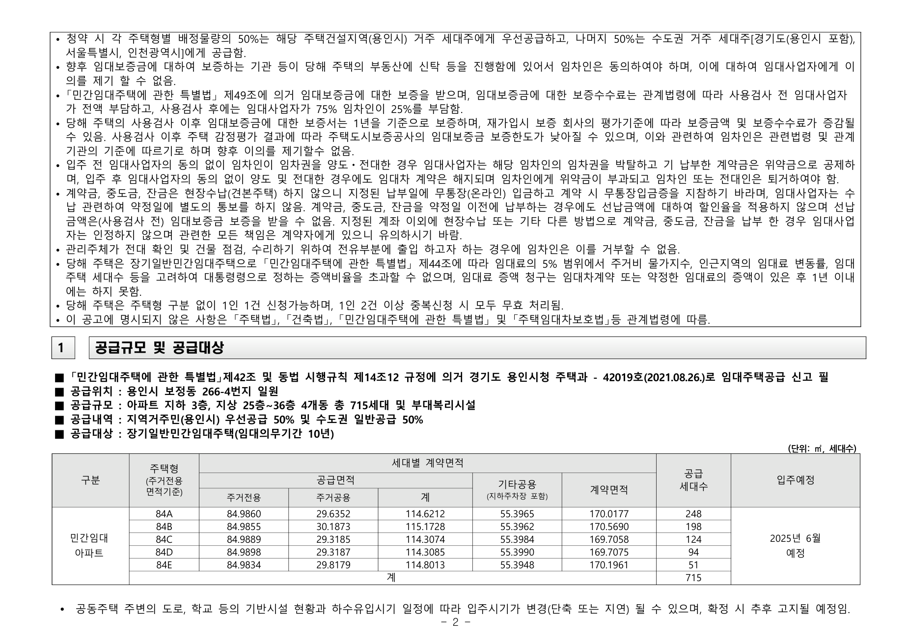

협상 준비자료 · 초안
동탄 파라곤3차 분석
사업주체(㈜바우하우스)와의 협의를 위해 원문 조항, 사업주체 배포자료, 타 사업장 사례를 대조하여 정리함.
쟁점 요약
파라곤3차는 임대의무기간 10년 이상의 공공지원민간임대주택이다. 모집공고문 원문은 임차권 양도·전대를 입주 전후를 불문하고 전면 금지하고, 위반 시 임차권 박탈과 위약벌을 규정한다.
여기에 조건이 하나 더 붙는다. 공고문 원문은 "임대의무기간 종료 후 임차인에게 분양전환 우선권을 부여하지 않습니다"라고 명시하고, 분양가격과 방법은 사업주체가 결정한다고 적었다. 계약자가 실제로 안내받은 "확정분양가·우선분양전환권"은 공고문 원문에 없는 조건이다(제3절 자료1 참조).
이 조항대로라면 계약금과 중도금을 납입한 임차인은 10년간 계약상 지위를 처분할 수 없다. 전근·질병 등 사정이 생겨도 회수 수단이 없다. 분양전환 우선권도 공고문상 보장되지 않는 상태에서 양도까지 막히면 자금이 장기간 묶인다.
그런데 실제 운용은 다르다. 안내자료에는 명의변경이 총 2회 가능하다고 되어 있고(자료2), 홍보자료에는 "전매가능"이 계약자 혜택으로 표기되어 있다(자료3). 계약자 진술도 같은 수치를 말한다(자료4). 공고문·안내자료·홍보자료가 서로 다른 내용을 담고 있다는 것이 이번 사안의 핵심이다.
자료의 신뢰도는 두 갈래로 갈린다. 공식 모집공고문 원문 2건(파라곤3차 36면·하이브엘 32면)은 PDF를 직접 확보해 전수 대조했다(자료1·자료5). 반면 실제 운용 횟수를 말하는 안내자료·홍보물· 진술(자료2·3·4·5-1·6)은 원 출처를 확인하지 못했다. 제7절에 항목별 확인 상태를 정리했다.
법적 근거 — 명의변경 제한은 법정사항이 아니라 사업주체 재량 사항
결론부터
명의변경(임차권 양도) 허용 여부와 횟수는 법령이 정한 사항이 아니다. 임대사업자가 결정하는 사항이다. 근거는 다음 세 가지이며, 모두 1차 자료로 확인했다.
근거 1 — 법령에 양도 횟수를 제한하는 조항이 없다
「민간임대주택에 관한 특별법」 및 동법 시행령에서 임차인의 임차권 양도 횟수를 제한하는 명문 조항은 확인되지 않았다. 양도·전대를 금지하고 위반 시 형사처벌하는 규정은 「공공주택 특별법」 제49조의4로, 이는 공공임대주택(LH·지방공사 등)에 적용되는 조항이다. 공공지원민간임대주택은 여기에 해당하지 않는다.
근거 2 — 두 사업장 공고문 문구가 같은데 운용은 다르다
파라곤3차와 하이브엘의 공식 모집공고문을 각각 직접 확보해 전수 대조했다.
| 구분 | 동탄 파라곤3차 | 수지구청역 하이브엘 |
|---|---|---|
| 공고문 금지 조항 | "관련 법령에서 허용되는 경우에도 불구하고 임대인의 동의 없이 … 양도하거나 … 전대할 수 없습니다" | "관련법령에서 허용되는 경우에도 불구하고 임대사업자의 동의없이 임차권 양도 및 임대주택의 전대는 불가함" |
| 공고문상 임차권 "명의변경" 규정 | 없음 (전 36면) "명의변경" 문자열은 1건 검색되나, 무주택 판정 기준의 "계약서상 명의변경일"로 임차권 양도와 무관 |
없음 (전 32면) "명의변경" 문자열 0건 |
| 공고문상 허용 횟수 규정 | 없음 ("횟수" 0건) | 없음 ("횟수" 0건) |
| 공고문상 분양전환 우선권 | "부여하지 않습니다" · 분양가격·방법은 사업주체가 결정 | "부여하지 않음" |
| 실제 운용 | 총 2회 | 입주 전 6회 + 입주 후 무제한 |
공고문 문구가 사실상 동일한데 실제 허용 횟수는 2회와 6회로 다르다. 공고문이 같은데 결과가 다르다면, 그 차이를 만든 것은 법령이 아니라 임대사업자의 결정이다.
분양전환 조건에서도 같은 구조가 확인된다. 두 공고문 모두 분양전환 우선권을 부여하지 않는다고 똑같이 적었는데, 파라곤3차만 별도 안내에서 "확정분양가·우선분양전환권"을 제시하고 있다. 공고문에 없는 조건을 사업주체가 스스로 얹어 운용하고 있다는 뜻이며, 명의변경 횟수도 같은 층위의 재량 사항이다.
근거 3 — 사업주체가 스스로 재량임을 문서에 밝혔다
파라곤3차 안내자료(자료3-1)의 비고란은 "임차 기간 중 전매 가능"이라고 적은 뒤, "전매시점 사업주체 고지"라는 단서를 달았다. 전매 시점을 법령이 정하는 것이 아니라 사업주체가 정해 알린다는 뜻이다. 재량 사항임을 사업주체가 문서로 인정한 표현이다.
같은 문구는 임차인 입장에서는 문제이기도 하다. 전매 가능 시점이 사업주체의 일방적 고지에 달려 있어 임차인은 자금 회수 시점을 예측할 수 없다. 재량의 근거이자, 동시에 그 재량이 임차인에게 불리하게 행사될 수 있다는 근거다.
사업주체가 들 수 있는 반대 논거 (사전 인지용)
2014.11.11. 시행된 구 「임대주택법」 시행령 개정 당시, "주택기금 또는 공공택지가 지원된 민간 공공건설임대주택은 공공성으로 인해 입주자격·임대료·분양전환 절차가 엄격히 제한되므로 임차권 양도·전대는 순수 민간임대에 한정해 허용한다"는 정책 설명이 있었다(대한민국 정책브리핑, korea.kr/news/policyNewsView.do?newsId=148787231). 다만 이는 현행 「민간임대주택에 관한 특별법」 시행(2015년) 이전의 구법 관련 설명이다. 그리고 파라곤3차 스스로 총 2회 허용을 운용 중이라는 사실과 배치된다.
원문·자료 대조
각 자료를 원문 그대로 인용하고 출처를 표기함
동탄 파라곤3차
공공지원민간임대주택 · 1,247세대 · 임대의무기간 10년
"임차인은 「민간임대주택에 관한 특별법」 등 관련 법령에서 허용되는 경우에도 불구하고 임대인의 동의 없이 임차권을 다른 사람에게 양도하거나 임대주택을 다른 사람에게 전대할 수 없습니다. 입주 전·후를 불문하고 임대인의 동의 없이 무단으로 양도 및 전대한 경우 사업주체는 임차권을 박탈하고 기 납부한 보증금 중 임대차계약서에 따른 위약벌이 공제되며, 입주 후 양도 및 전대한 경우 임차인의 퇴거를 요청할 수 있으며, 임대차 계약해지로 인한 불이익(임대차계약에서 정해진 위약금징구 등)이 발생할 수 있으므로 유의하시기 바랍니다."
출처 — 임차인모집공고문 3면, "임차권 양도 및 전대 금지" 항. 원문 PDF:
http://xn--3-3b6e97po2dc47ageg29d.com/data/gongo01.pdf (전 36면, 본 저장소 evidence/paragon3_gongo.pdf에 보존).
확보본의 표시상 임차인 모집공고일은 2025.06.23.(화성시 주택과 12592호, 2025.06.19. 신고)이며,
문서 내에 "변경공고" 표기는 없다. 기존 검토보고서가 기준으로 삼은 2026.04.16.자 변경공고본은 별도 대조가
필요하다(다만 변경공고본을 기준으로 하더라도 아래 금지 조항의 존재 자체는 달라지지 않으므로, 본 자료의 논증에는
영향이 없다).

원문은 "관련 법령에서 허용되는 경우에도 불구하고"라고 적어, 법령상 양도가 허용되는 경우가 있음을 전제하고 있다. 금지의 직접 근거는 임대인(사업주체)의 동의 여부이며, 공고문에는 동의 기준·허용 횟수· 절차에 관한 규정이 없다.
[같은 공고문에서 함께 확인된 사항] ▣임대기간 항은 "본 주택의 임대의무기간은 10년 이상이며, 임대의무기간 종료 후 임차인에게 분양전환 우선권을 부여하지 않습니다"라고 적었고, 33면은 "임대의무기간 경과 후 시장상황을 고려하여 분양가격 및 방법 등은 사업주체가 결정하여 시행한다"고 적었다. 전수검색 결과 "확정분양가"·"우선분양전환" 표현은 공고문 전 36면에 각 0건이다. 계약자가 안내받은 확정분양가·우선분양전환권은 공고문이 아니라 사업주체 홈페이지·안내자료에만 있는 조건이며, 이 사실은 협상에서 양방향으로 쓰인다 — 사업주체가 공고문에 없는 조건을 스스로 얹어 운용한다는 증거(제2절)인 동시에, 임차인이 기대하는 출구(분양전환·양도) 어느 쪽도 공고문상 보장되어 있지 않다는 위험 근거이기도 하다.
동탄 파라곤3차 — 계약금 안내 및 해지·위약금 규정
82·108타입 계약금 안내표 및 "6. 해지 및 위약금 규정" 항목
"명의 변경은 입주전, 2037년 2월 등기 시기 총 2회만 가능합니다." — "① 입주 전(계약 해제): 위약금 규모는 일반적으로 전체 임대보증금의 10%가 발생. 정당한 사유(근무지 이전, 질병 등)가 있을 경우 증빙을 통해 위약금을 감면받거나 임차권을 승계(전매)하는 방식으로 해결하기도 함. ② 입주 후(중도 퇴거): 위약금 규모는 확정분양가의 10% + 우선분양전환권 금액."
[자료2 전사 — "5. 계약 및 금융 조건" (우선분양전환형 82타입 기준)]
"계약금(10%): 1차 동호지정 5백만원, 2차 동호지정 후 3일이내 3200만원(임대보증금1700만원 및 우선분양전환권 1500만원), 한달 후 공급가의 5%인 2200만원 납부. 총 5900만원이 한달 이내에 필요한 자금입니다. / 중도금(49%): 무이자 혜택이 적용되어 입주 시점(2027년 2월 예정)까지 추가 비용이 발생하지 않습니다. / 잔금(41%): 입주 지정일에 납부합니다."
[자료2 전사 — "동탄 파라곤 3차 계약금안내" 표] 단위 원.
| 타입 · 시점 | 구분 | 10년 안심거주 임대형 | 10년 안심거주 + 우선분양전환형 |
|---|---|---|---|
| 82타입 최초계약 | 임대보증금의 5% | 22,016,250 | 22,016,250 |
| 유상옵션비 / 우선분양전환권 | 54,500,000 | 15,000,000 | |
| 합계 | 76,516,250 | 37,016,250 | |
| 82타입 · 한달 뒤 | 공급가액 5% | 22,016,250 | 22,016,250 |
| 108타입 최초계약 | 임대보증금의 5% | 28,001,250 | 28,001,250 |
| 유상옵션비 / 우선분양전환권 | 84,500,000 | 25,000,000 | |
| 합계 | 112,501,250 | 53,001,250 | |
| 108타입 · 한달 뒤 | 공급가액 5% | 28,001,250 | 28,001,250 |
출처 — 사용자 제공 자료(견본주택 배포자료 또는 분양 안내물로 추정). 배포 경로·시점은 여전히 미상이나, 진본성 방증은 확보되었다.
[검증] 원문 수치와의 정합성 — 3중 확인
| 자료2 기재값 | 대조 대상 | 결과 |
|---|---|---|
| 임대보증금의 5% = 22,016,250원(82) / 28,001,250원(108) | 모집공고문 원문 임대보증금 440,325,000원 / 560,025,000원 | 정확히 일치 (×20 = 원문값) |
| "총 5900만원이 한달 이내에 필요한 자금" | 계약자 진술(자료4-1) "1차 계약금+옵션1500 = 5900만원" | 일치 — 서로 다른 경로에서 동일 금액 |
| 우선분양전환권 15,000,000 / 25,000,000원 | 사업주체 배포자료(자료3-1) 및 홈페이지 안내 | 일치 |
| 유상옵션비 82타입 54,500,000원 | 자료3-1 기재값 54,000(천원) = 54,000,000원 | 50만원 불일치 — 판본·시점 차이로 추정, 확인 필요 108타입은 84,500,000원으로 양 자료 일치 |
임대보증금 5% 값이 공고문 원문과 소수점 단위까지 맞아떨어지고, 총액이 계약자 진술과 독립적으로 일치한다. 외부인이 임의로 작성한 문서로 보기 어렵다. 다만 유상옵션비 50만원 차이는 자료2와 자료3-1이 서로 다른 시점에 배포되었을 가능성을 시사하므로, 사업주체에 최종 확정본을 요청해야 한다.
이 문서가 진본으로 확인되면, "명의변경 총 2회(입주전 1회 + 2037.2. 등기 시기 1회)"라는 구체적 수치와 더불어 "정당한 사유가 있으면 위약금 감면 또는 임차권 승계(전매)로 해결한다"는 사업주체 자체 운용 기준까지 확인되는 셈이다. 이는 명의변경이 임대인의 재량 사항이라는 점(제2절 참조)을 사업주체 스스로 문서화한 것에 해당한다.
동탄 파라곤3차 — 분양 홍보자료 2건
사업주체가 직접 배포한 홍보물 · 원문 모집공고문과 동일 물건 대상
자료3-1 표제 — "임대형, 분양전환형 선택가능한 계약조건 / 10년 안심 거주 및 분양전환시 전매권 활용하여 시세차익까지"
자료3-1 비고란 — "임차 기간 중 전매 가능 *전매시점 사업주체 고지"
[자료3-1 전사] 사업주체 배포 안내표. 단위 천원.
| 구분 | 82타입 | 108타입 |
|---|---|---|
| 임대보증금 | 440,325 | 560,025 |
| ㉠ 10년 안심거주 임대형 — 유상옵션비 | 54,000 | 84,500 |
| ㉠ 총 납입금 | 494,325 | 644,525 |
| ㉡ 10년 안심거주+우선분양전환형 — 우선분양전환권 | 15,000 | 25,000 |
| ㉡ 총 납입금(기 납부금) | 455,325 | 585,025 |
| 2037.02. 추가 납부금 | 332,000 | 450,000 |
| 총 분양전환가 | 787,325 | 1,035,025 |
부기: "※ 상기 임대가 기준 : 6층이상 일반공급가, 자세한 사항 모집공고 참조" · 하단 로고 "동탄 Paragon 3차"
자료3-2 ("계약자 특별혜택" 안내) — "유주택자 계약가능 / 입주전, 분양전 전매가능 / 중도금 무이자 혜택 / 시스템에어컨 전실 무상혜택" (하단 태그: "공공지원 민간임대 / 전매가능 / 확정분양가 / 세금無")
원본 캡처를 확보해 이 자리에 첨부할 것.
출처 — 사용자 제공 자료 2건, 배포 경로·시점 미상. 다만 자료3-1은 진본성 방증이 확보되었다 — 기재된 임대보증금 440,325(천원)·560,025(천원)이 공식 모집공고문 원문의 수치와 문자열 단위로 일치하고, 내부 산술도 정확히 맞는다(455,325+332,000=787,325 / 585,025+450,000=1,035,025). 외부인이 임의로 만든 자료로 보기 어렵다.
원문(자료1)은 입주 전·후를 불문한 양도·전대 전면 금지 및 위반 시 임차권 박탈·위약벌을 규정한다. 반면 이 홍보자료 2건은 각각 독립적으로 "전매가능"을 계약자 혜택으로 명시한다. 특히 자료3-1은 표제 자체가 "분양전환시 전매권 활용하여 시세차익까지"이다 — 전매를 부수적으로 언급한 정도가 아니라, 시세차익 실현 수단으로 전면에 내세워 광고하고 있다.
이 불일치는 「표시ㆍ광고의 공정화에 관한 법률」 제3조(부당한 표시·광고행위의 금지 — 거짓·과장, 기만적 표시·광고) 위반 여부 검토의 근거가 된다. 공고문이 전면 금지한 행위를 사업주체가 홍보물 표제에서 수익 수단으로 제시했다면, 계약자로서는 전매가 계약상 보장된 권리라고 인식할 수밖에 없다. 협상에서는 위법 단정보다, 광고와 계약조항의 간극을 사업주체가 어떻게 메울 것인지를 묻는 방식이 실효적이다(제6절 요청안 4 참조).
동탄 파라곤3차 계약자로 밝힌 사람의 온라인 게시글 댓글
호갱노노 단지 게시판 추정 · 작성자가 "오늘 계약당사자"라고 밝힘
"오늘 계약당사자인데 오늘기준으로 입주전 한번 10년뒤한번 뭐이렇데요. 3일동안 전매제한 이야기 나왔다가 들어갔다가, 중도금도 무이자로 생겼다가 없어졌다가, 오늘기준은 중도금 무이자 있다고하구요. 정부정책에 의거 오락가락 하나봐요."
출처 — 사용자 제공 캡처. 게시글의 정확한 URL은 확보하지 못했다(호갱노노 해당 단지 게시판으로 추정되나 접속 시도한 개별 게시글 주소는 삭제·비공개 상태였다). 익명 커뮤니티 진술로, 공식 문서가 아니다.
진술상 "입주전 1회, 10년뒤(분양전환·등기 시점) 1회"는 자료2("총 2회")의 수치와 일치한다. 자료7에서 세 번째 경로가 추가로 확인되었다.
동탄 파라곤3차 분양 소개 게시물 "3. 분양 전환 및 투자 포인트"
공개 웹 게시물 · 게시자 개인 블로그(분양 소개 성격)
"확정 분양가: 10년 후 분양 시 가격을 미리 확정할 수 있는 조건 확인 / 우선 분양권: 10년 거주 후 임차인에게 확정분양가로 내 집 마련 기회 부여 / 전매 가능: 계약금 1차(5%), 중도금 무이자 및 임차권 승계(전매2회) 조건 확인"
출처 — https://m.blog.naver.com/hhk89/224269126063 (사용자 제공 캡처). 본 자료 중 유일하게 URL이 특정되는 "2회" 근거이다. 다만 사업주체 공식 자료가 아니라 제3자 게시물이므로 1차 자료는 아니다.
의의 — "총 2회"를 말하는 경로가 이로써 서로 독립된 3개가 되었다: 안내자료(자료2), 계약자 진술(자료4), 공개 게시물(자료7). 세 경로가 같은 수치를 말한다는 것은 그 수치가 현장에서 실제로 안내되고 있다는 정황증거로서 상당한 무게를 가진다. 반면 공고문·홈페이지 어디에도 이 수치가 없다는 사실은 변함이 없다 — 이 간극 자체가 요청안 1(서면 확정)의 직접 근거다.
불일치 1건 — 계약금 비율이 자료7은 "1차 5%", 자료4의 계약자 진술은 10% (진술상 "1차 계약금+옵션1500=5,900만원"이며, 임대보증금 440,325,000원의 10%인 44,032,500원에 1,500만원을 더한 값과 일치)로 서로 다르다. 자료4가 "3일 동안 조건이 오락가락한다"고 진술한 점과 더불어, 계약조건이 시기별로 변동되어 왔음을 시사한다. 이는 조건의 서면 확정을 요구할 또 하나의 근거가 된다.
수지구청역 롯데캐슬 하이브 엘
장기일반민간임대주택 · 715세대 · 임대의무기간 10년 · 2021.08.27.자 임차인모집공고
[공고문 1면] "당해 주택은 임대의무기간 종료 후 임차인에게 분양전환 우선권을 부여하지 않음. 「민간임대주택에 관한 특별법」 등 관련법령에서 허용되는 경우에도 불구하고 임대사업자의 동의없이 임차권 양도 및 임대주택의 전대는 불가함(공급 신청 전 반드시 확인 바람)."
[공고문 2면] "입주 전 임대사업자의 동의 없이 임차인이 임차권을 양도ㆍ전대한 경우 임대사업자는 해당 임차인의 임차권을 박탈하고 기 납부한 계약금은 위약금으로 공제하며, 입주 후 임대사업자의 동의 없이 양도 및 전대한 경우에도 임대차 계약은 해지되며 임차인에게 위약금이 부과되고 임차인 또는 전대인은 퇴거하여야 함."


출처 — 공식 임차인모집공고문 PDF(전 32면, 58,281자) 직접 확보·대조. 표시상 최초 임차인 모집일 2021.08.27.,
공급규모 715세대, 장기일반민간임대주택(임대의무기간 입주지정기간 개시일부터 10년).
본 저장소 evidence/hivel_gongo.pdf에 보존.
https://file.kbland.kr/image/kbstar/land/doc/alian/kms/lots/apt_supply_mst/pbannc/selothscmno/6025082/uploadfile_202108274837532.pdf
이 자료가 이번 검토에서 가장 중요하다. 하이브엘 공고문 32면을 전수검색한 결과 "명의변경" 0건, "횟수" 0건으로 파라곤3차와 동일하다. 금지 조항의 문구도 사실상 같다 ("관련법령에서 허용되는 경우에도 불구하고 임대사업자의 동의없이 … 불가함"). 분양전환 조건도 같다 — 1면에 "당해 주택은 임대의무기간 종료 후 임차인에게 분양전환 우선권을 부여하지 않음"이라고 적혀 있고, "확정분양가"·"우선양도" 표현은 각 0건이다.
그럼에도 하이브엘의 실제 운용은 입주 전 6회·입주 후 무제한이다(자료5-1). 동일한 공고문 문구에서 서로 다른 운용이 나온다는 것은, 허용 횟수가 법령이 아니라 임대사업자의 결정으로 정해진다는 것을 증명한다.
[자료5-1] 하이브엘 안내자료 — "명의변경 : 입주 시까지 6회 가능 / 입주 이후 무제한" (사용자 제공, 안내문 표기 연락처 031-216-7988). 원 출처 웹페이지는 확인하지 못했다. 다만 위 공식 공고문 대조로 "공고문에 횟수 규정이 없다"는 사실 자체는 1차 자료로 확정되었으므로, 이 안내자료의 진위와 무관하게 위 논증은 성립한다.
신광교 제일풍경채 (광교풍경채 어바니티)
기업형 임대주택(뉴스테이 계열) · 1,766세대 · 시행 에이치엠홀딩스(주) · 시공 제일건설
"명의변경 — [임대차계약(선택1)] 불가 / [매매예약제(선택2)] 입주 전 2회(최초 계약일로부터 1년 이후) · 입주 후 제한없음. 계약해지 시 [매매예약제]는 위약금 대신 명의변경으로 대체."
원본 캡처를 확보해 이 자리에 첨부할 것.
출처 — 사용자 제공 자료. 문서 내 회사명은 "에이치엠홀딩스(주)"로 표기되어 있으나, 이 문서가 게재된 공식 웹페이지 URL은 확인하지 못했다 · 원문 모집공고문은 별도 확인 필요
신광교도 순수 임대차계약(선택1)을 고르면 명의변경이 "불가"하다는 점은 파라곤3차와 같다. 다만 계약 시점에 분양전환가격을 미리 서면 확정하는 매매예약제(선택2)를 고른 임차인에 한해 양도를 허용한다. 파라곤3차의 "우선분양전환권"은 이 매매예약제와 동일한 상품 구조이므로 비교 대상은 이 선택2 조건이다.
비교표
| 구분 | 동탄 파라곤3차 | 수지구청역 하이브엘 | 신광교 제일풍경채 |
|---|---|---|---|
| 법적 유형 | 공공지원민간임대주택 | 장기일반민간임대주택 | 기업형 임대주택(뉴스테이 계열) |
| 임대의무기간 | 10년 이상 공고문 확인 |
10년 공고문 확인 |
8년 원문 미확보 |
| 모집공고문 원문상 분양전환 | "분양전환 우선권을 부여하지 않습니다" · 분양가격·방법은 사업주체 결정 "확정분양가"·"우선분양전환" 각 0건 |
"분양전환 우선권을 부여하지 않음" "확정분양가"·"우선양도" 각 0건 |
원문 미확보 |
| 실제 안내상 분양전환 | 확정분양가(우선분양전환권) 공고문 아닌 홈페이지·안내자료 |
해당 없음(안내자료상 분양전환 조건 미확인) | 매매예약(확정분양가) 자료6, 출처 미상 |
| 모집공고문 원문상 명의변경 | 입주 전·후 불문 동의 없이 전면 금지 · 허용 횟수 규정 없음 전 36면 전수검색 |
입주 전·후 불문 동의 없이 전면 금지 · 허용 횟수 규정 없음 전 32면 전수검색 · 파라곤3차와 사실상 동일 문구 |
원문 미확보 |
| 실제 운용(안내자료 기준) | 총 2회 입주 전 1회 + 2037.2. 등기 시기 1회 |
입주 전 6회 + 입주 후 무제한 | 입주 전 2회(최초계약 1년 후~) + 입주 후 제한없음 |
| 근거자료 및 확인 상태 | 원문 = 공식 PDF 직접 확인(자료1, 확실) 총 2회 = 자료2·자료4, 출처 미상 |
원문 = 공식 PDF 직접 확인(자료5, 확실) 6회·무제한 = 자료5-1, 출처 미상 |
원문 미확보 2회·제한없음 = 자료6, 출처 미상 |
예상 반론과 대응 논거
사업주체측 예상 논리
"공공지원민간임대주택은 정부 지원을 받은 만큼 공공성이 있다. 입주자격과 임대료를 통제하려면 임차권 양도를 제한할 수밖에 없다."
"하이브엘은 장기일반민간임대라 유형이 다르다. 신광교는 원문 공고문도 확인되지 않았다. 비교 대상이 아니다."
대응 논거
첫째, 원문이 이미 답을 하고 있다. 자료1은 "관련 법령에서 허용되는 경우에도 불구하고 임대인의 동의 없이" 안 된다고 적었다. 금지의 근거를 법령이 아니라 임대인의 동의에 두었다는 뜻이다.
둘째, 사업주체 스스로 이미 허용하고 있다. 총 2회라는 자체 기준을 운용 중이다(자료2·자료4). 법이 금지한다면 성립할 수 없는 기준이다.
셋째, 유형 차이 주장은 그 자체로 자기모순이다. 하이브엘이 장기일반민간임대인 것은 맞다. 그러나 유형 때문에 양도가 금지된다면 파라곤3차의 허용 횟수는 0회여야 한다. 실제로는 2회를 운용 중이다. 유형은 0회와 2회의 차이를 설명하지 못하고, 2회와 6회의 차이도 설명하지 못한다. 더구나 두 공고문은 금지 문구뿐 아니라 "분양전환 우선권을 부여하지 않는다"는 문구까지 같다. 유형이 달라도 공고문이 임차인에게 약속한 바는 동일하다.
넷째, 공공성 우려는 조건으로 해소된다. 양수인에게 동일한 자격요건을 요구하면 된다. 요청 사항은 양도 허용 자체가 아니라, 이미 존재하는 동의 기준을 계약서면에 명문화하는 것이다.
협상 요청안
우선순위 순
명의변경 허용 조건의 서면 확정
현재 허용 횟수와 절차는 공고문에 없고 안내자료로만 전해진다. 허용 횟수·시점·신청 절차·소요 수수료를 계약서면 또는 정정공고에 명시할 것을 요청한다.
최우선허용 횟수 확대
입주 전 6회·입주 후 무제한(자료5 수준)을 목표로 한다. 최소 기준은 입주 전 2회·입주 후 제한없음(자료6 수준)으로 제시한다.
목표 / 최소기준양수인 자격심사를 조건으로 한 승인 절차 신설
양수인에게 동일한 자격요건 충족을 요구하는 조건부 승인 방식이다. 공공성 우려를 해소하면서 양도를 허용하는 절충안으로 제시한다.
절충안안내자료와 계약조항 불일치의 정리
자료2·3의 진위와 출처를 사업주체에 확인한다. 진본으로 확인되면 "전매가능" 표기와 원문 전면금지 조항의 불일치에 대한 해명 및 시정을 요구한다.
사실관계 확인 후 진행확인 상태 정리
협상 착수 전 확보해야 할 자료
| 항목 | 확인 상태 | 조치 |
|---|---|---|
| 모집공고문 양도·전대 금지 조항(자료1) | 확인 완료 — 공식 PDF 원문 직접 대조 | 추가 조치 불요 |
| 공고문상 허용 횟수 규정 부존재(자료1) | 확인 완료 — 36면 전수검색 | 추가 조치 불요 |
| 하이브엘 공고문 원문 및 동일 문구(자료5) | 확인 완료 — 공식 PDF 32면 전수검색 | 추가 조치 불요 |
| 확보한 파라곤3차 공고문의 판본 | 확보본 표시상 모집공고일 2025.06.23. · "변경공고" 표기 없음 — 기존 보고서 기준인 2026.04.16.자 변경공고본과 동일본인지 미확인 | 사업주체 홈페이지에서 최신 변경공고본 재확보 후 조항 재대조 |
| 확정분양가·우선분양전환권의 공고문상 부존재 | 확인 완료 — 36면 전수검색 결과 각 0건, 오히려 "우선권 부여하지 않음" 명시 | 실제 계약서·공급안내에 해당 조건이 어떻게 기재되는지 서면 확인 |
| "총 2회" 허용 기준(자료2·4·7) | 독립 3개 경로 일치 — 안내자료(자료2) · 계약자 진술(자료4) · 공개 게시물(자료7, URL 특정). 자료2는 임대보증금 5% 값이 공고문 원문과 정확히 일치해 진본성 방증 확보 | 배포 주체·시점만 사업주체에 서면 확인. 수치 자체는 협상에서 제시 가능한 수준 |
| "전매가능" 홍보 문구(자료3) | 내용 확보 — 자료3-1 표제 "분양전환시 전매권 활용하여 시세차익까지", 비고란 "임차 기간 중 전매 가능*전매시점 사업주체 고지". 기재 임대보증금이 공고문 원문과 일치 | 배포 경로·시점 확인 |
| 유상옵션비 82타입 금액 | 자료2는 54,500,000원, 자료3-1은 54,000,000원 — 50만원 불일치 | 사업주체에 최종 확정본 요청(108타입은 84,500,000원으로 양 자료 일치) |
| 유주택자 중도금 집단대출 조건 | 계약자 진술 — "기존주택 매도약정 조건", "집단대출 외 개인대출 3년 제한". 익명 진술로 미확인 | 대출 취급 조건 및 매도약정 문안 서면 확인 — 확인 시 최우선 쟁점으로 격상 |
| 계약자 진술(자료4) | 출처 미상 · 익명 진술 | 참고자료로만 활용 |
| 하이브엘 "입주 전 6회·입주 후 무제한" 안내자료(자료5-1) | 출처 미상 | 안내문 표기 연락처(031-216-7988) 등으로 확인 · 공고문 논증 자체는 이와 무관하게 성립 |
| 신광교 제일풍경채 비교사례(자료6) | 출처 미상 · 모집공고문 원문 미확보 | 모집공고문 원문 확보 시 신뢰도 상승 |